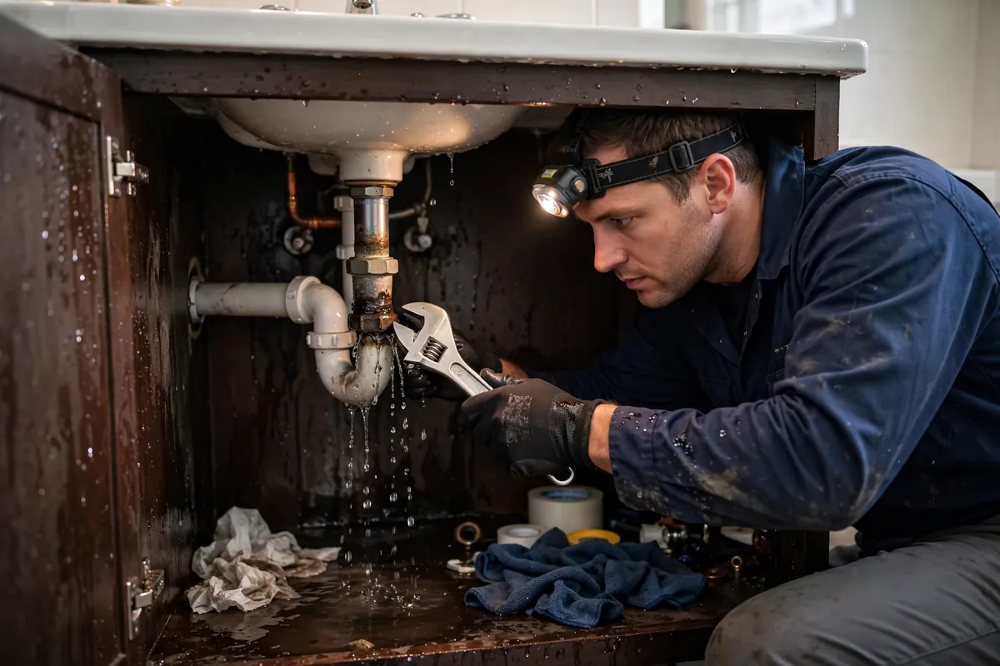

Plumbing Leak Cleanup in Hollywood, FL
Plumbing leaks are the quiet destroyers. A pinhole in a copper line or a slowly weeping fitting can soak a wall cavity for weeks while the only evidence is a faint stain or a cabinet base that feels soft. Plumbing leak cleanup is about what happens after the wrench work: finding everywhere the water traveled, opening up what needs to be opened, extracting it, and drying the structure so a repaired pipe doesn't leave behind a mold farm.

Understanding Plumbing Leak Cleanup in Hollywood
Not all plumbing leaks behave alike. Supply-line leaks are pressurized — they spray, mist, and soak everything in the cavity fast. Drain leaks are sneakier, releasing water only when fixtures run, which makes them intermittent and harder to trace. Then there are the slow seeps at valve connections and supply hoses that can run for months. Each type wets different materials: vanity and sink bases swell and delaminate, wall cavities fill behind tile, and subfloors soften underfoot long before anyone connects the dots.
The tricky part is that fixing the pipe is only half the job. By the time a leak is discovered, water has usually been migrating through building materials far beyond the fitting itself — wicking up drywall, pooling on bottom plates, settling into insulation. A plumber stops the source; the cleanup addresses everything the water touched in the meantime. Skipping that second half is how a $200 pipe repair becomes a $5,000 mold remediation six months later.
How We Handle the Job
First the water gets shut off if it's still active, and we coordinate with your plumber on the repair — source control comes before anything else. Then we trace the damage: moisture meters and thermal imaging follow the wet path through cabinets, walls, and floors to define the full affected area. Wet materials are exposed with minimal, repairable openings rather than wholesale demolition. Standing water is extracted, unsalvageable material like swollen particle board comes out, and the cavities are dried with directed airflow until readings verify them.
We show you the moisture map so you understand why each opening was necessary — nothing gets cut without a reason. If the loss extends beyond the plumbing itself, related work such as emergency water extraction, structural drying, or flood cleanup may be part of the same job, sequenced around the plumber's repair.
Local Response and Insurance Support
Searching for plumbing leak cleanup near me usually means you need help without delay. We answer emergency calls around the clock. Documentation — photos and moisture readings — supports conversations with your insurance carrier when the loss is sudden and accidental. We do not decide coverage; we provide clear technical information about the work performed.
When to Call
Call if you have active water, wet materials that are not drying, odors after a leak, or a backup that may involve contaminated water. Early action in Hollywood’s climate is almost always less disruptive than waiting. For neighborhood-specific service, see our service areas. For the full list of capabilities, visit all services.
Frequently Asked Questions
The plumber already fixed the leak — isn't the job done?
The pipe is fixed, but the water it released is still inside your walls, cabinets, or subfloor. Trapped moisture doesn't evaporate on its own in any reasonable timeframe — it needs to be found and dried, or it becomes a mold problem.
Will you have to tear open my walls?
Only where meters show moisture, and we keep openings minimal and repairable. A small, precise cut to dry a wet cavity beats leaving it sealed and damp every time.
How do you find a leak you can't see?
Moisture meters, thermal imaging, and following the damage trail — stains, swelling, and soft spots point back toward the source. The wettest reading is usually closest to it.
Is water from a plumbing leak safe to touch?
Supply-line water starts clean, but drain water is a different story — it's gray or black category depending on the fixture. We assess the category first and handle each accordingly.